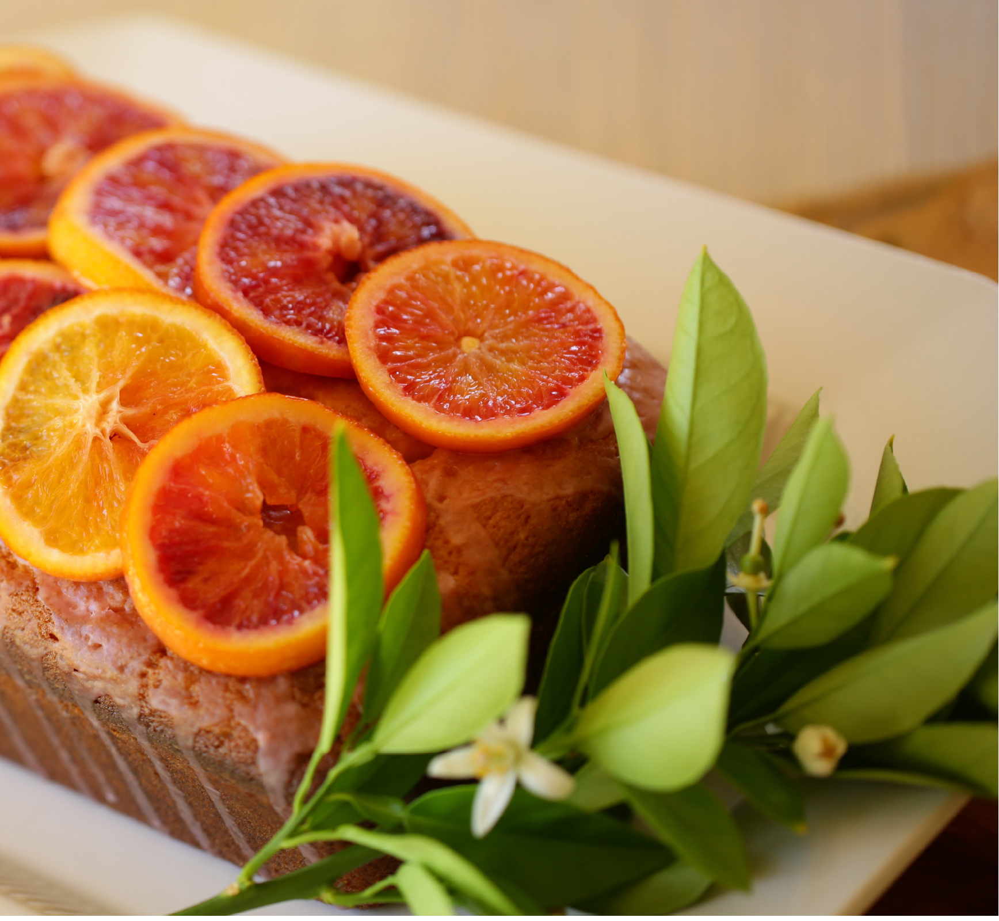

For Cake:
- 1 cup butter, (240g) room temperature
- 1.25 cups (250g) sugar
- 4 eggs, room temperature
- 2 tsp (10ml) vanilla
- 2 tsp (10 ml) orange zest (from 2 blood oranges)
- 1.5 cups (180g) all-purpose flour
- 2 tsp (10 ml) baking powder
- 0.5 tsp (2.5ml) salt
- 1 cup (240 ml) of sour cream or plain Greek Yogurt
Candied Orange Garnish:
- 2 blood oranges
- 0.75 cup (150 g) sugar
- 0.25 cup (60 ml) water
For Glaze:
- 1 cup (100g) powdered sugar
- 3 tbsp (45ml) blood orange juice
- Preheat oven to 350F (175C). Butter and flour a 9” x 5” (23cm x 13cm) loaf pan and set aside.
- In the bowl of an electric mixer beat together the butter and sugar until fluffy. Add eggs 1 at a time, beating in between each addition. Add vanilla and orange zest beat to combine.
- In a medium bowl whisk together the flour, baking powder and salt.
- Add the flour mixture to the butter mixture, in thirds, alternating with the sour cream, until both are incorporated.
- Transfer batter to the loaf pan, smooth out top and bake for 45-50 mins until a tooth pick comes out clean. NOTE: if top is beginning to brown too quickly, cover with a sheet of foil on top until fully baked through.
- Allow cake to cool completely before releasing it from the pan. Place cake on a cooling rack, fitted into a sheet pan, to catch the glaze when cake is frosted.
For candied oranges:
- Slice 2 oranges into 12 orange wheels (1/4” thick) each orange should give you 6 wheels.
In a large sauté pan combine sugar and water, simmer mixture until translucent and bubbling.
- Add oranges in a single layer. Simmer oranges for 3-4 mins each side and then transfer to a cooling rack (with a rimmed sheet pan underneath) to catch the drippings.
For glaze:
- Squeeze the oranges that were striped of the zest for the cake, into 3 tablespoons of juice.
In a small bowl add powder sugar through a fine sieve to remove clumps. Then and juice, whisk until smooth.
- Spoon glaze over the top of cake, allowing it to drip over the sides of the cake. Garnish with 2 rows of candied oranges, overlapping slightly to create a decorative design (alternate colors too, lighter with darker etc)
- Place cake on a platter, garnish either side with fresh mint or orange blossom if you have them, and slice into thick slices. Serve with homemade whipped cream. Enjoy!